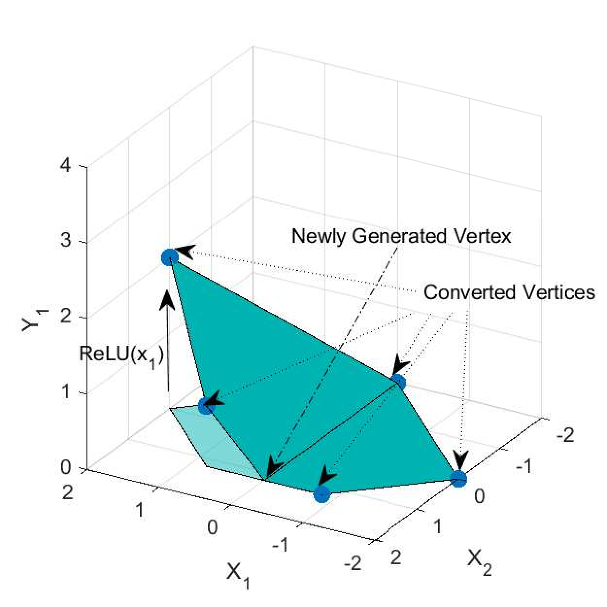
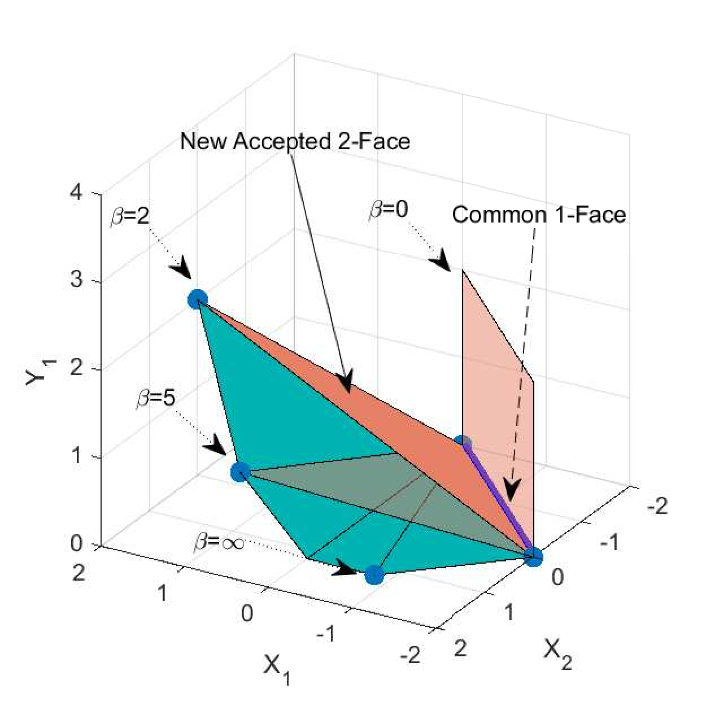
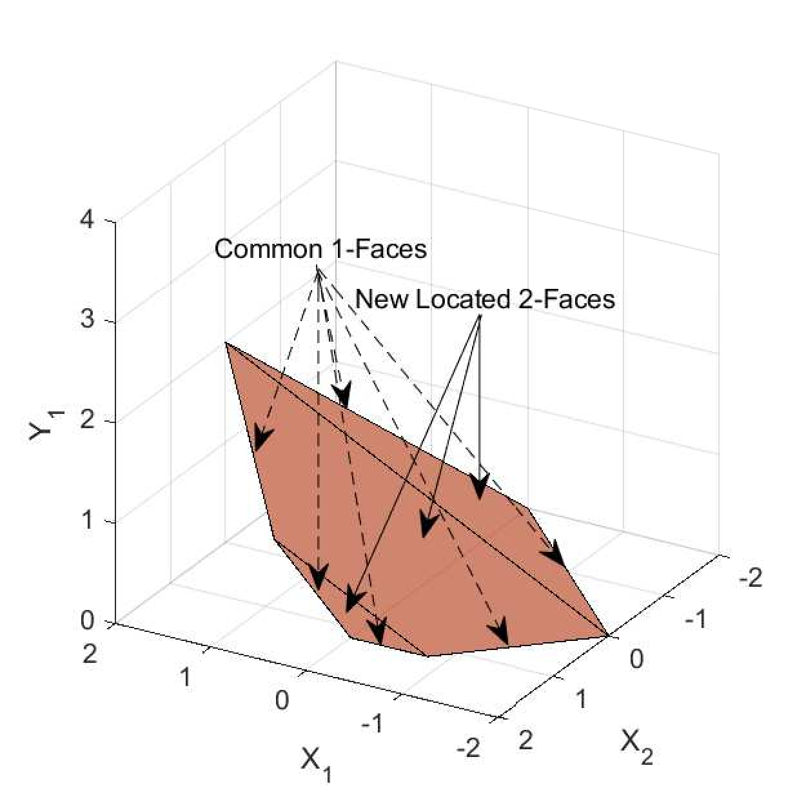

Profile Creator: Zhongkui Ma
Paper Authors: Zhongkui Ma, Jiaying Li, Guangdong Bai
Before Reading
This profile aims to help you quickly understand our paper. So we will skip the background of neural network verification and several basic concepts. Before read this article, we suppose you have a basic understanding of neural networks and computational geometry.
You need to learn about the following basic concepts: neural network, ReLU function, polytope (by default we mean convex polytope), k-face, convex hull, linear programming. You need to know the H-representation and V-representation of polytope, which define a polytope by halfspaces (linear constraints) or vertices.
What is neural network verification?
Neural network verification is a process of proving the correctness of neural networks, i.e., the output of the neural network is always correct. For example, we want a sample with tiny perturbation to be classified as the same class as the original sample; we call a sample with tiny perturbation an adversarial sample if it is classified as a different class. This property is called local robustness.
There are too many possible perturbation, and we cannot enumerate all of them. Neural network verification use mathematical methods to resolve this problem. The core idea is to obtain the range of output with given input range.
Neural network => Linear constraints
Calculate the output range is hard due to non-linear activation functions. Neural network is a comlicated composite function, having linear and non-linear functions. This unlinear activation makes a neural network become a universal function approximator, simultaneously, it brings difficulties to neural network verification.
Relax non-linear activation functions to linear constraints. Replacing the non-linear activation function with linear constraints is a popular method. By now, linear transformation directly becomes linear constraints (linear equalities), and non-linear activation function also becomes linear constraints (several linear inequalities). In this process, the linear inequalities consider extra value-pairs of input and output, resulting in a loss of exactness. However, this method cover all possible value-pairs of input and output, and it is a good over-approximation, which is called soundness.
Up to now, we have converted a neural network to linear constraints. And there are many methods about linear constraints, such as linear programming, polytope, etc. Furthermore, how to construct these linear constraints is a problem because different linear constraints results in different over-approximation.
Verifying neural network => Solving linear programming problem
After converting the neural network to a set of linear constraints involved with each variable in the network, those properties can be transformed to linear constraints can be verified by solving a linear programming. For example, we want to verify y1 > y2, where y1 and y2 are two outputs of the neural network.
Linear constraints for function => Convex hull of function
A set of linear constraints defines a convex polytope. The minimal convex polytope contains the image (the set of all value-pairs) of the non-linear function is the best choice because it contains the fewest unnecessary points. We call this minimal convex polytope convex hull of the function. In particular, the convex hull of ReLU function is called ReLU hull.
The 1d case is simple, because we only need to consider y=ReLU(x) in the 2d (x,y)-space. The difficult part is the multi-dimension case, because we need to consider the convex hull of ReLU function in the high-dimension space, which comes from the high-dimension and interrelated input and output of neural networks.
Over approximating ReLU hull
It is hard to compute the exact convex hull. Moreover, by computational geometry, a polytope may have an exponential number of vertices or faces regarding the dimension. Instead of computing the convex hull, we construct a convex polytope to over-approximate the convex hull. Obviously, it brings many benefits, such as less computation, less memory, etc.
WraLU means Wrapping the ReLU function. We will construct a set of faces to wrap the ReLU function , which is our insight. Noted that the ReLU function is a linear piece-wise function, and we can use these linear pieces as faces.
Running Example


